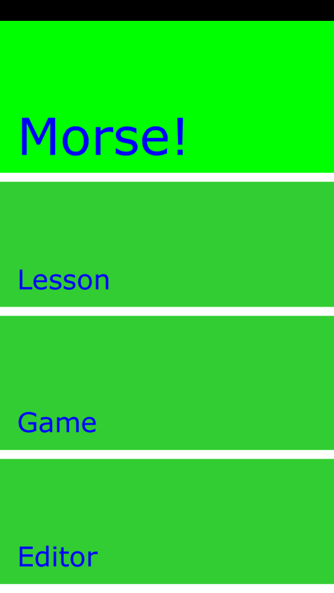
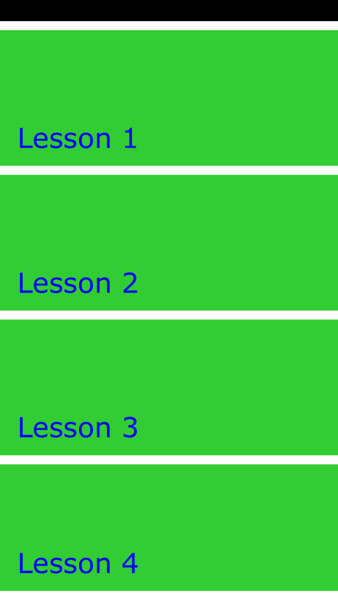
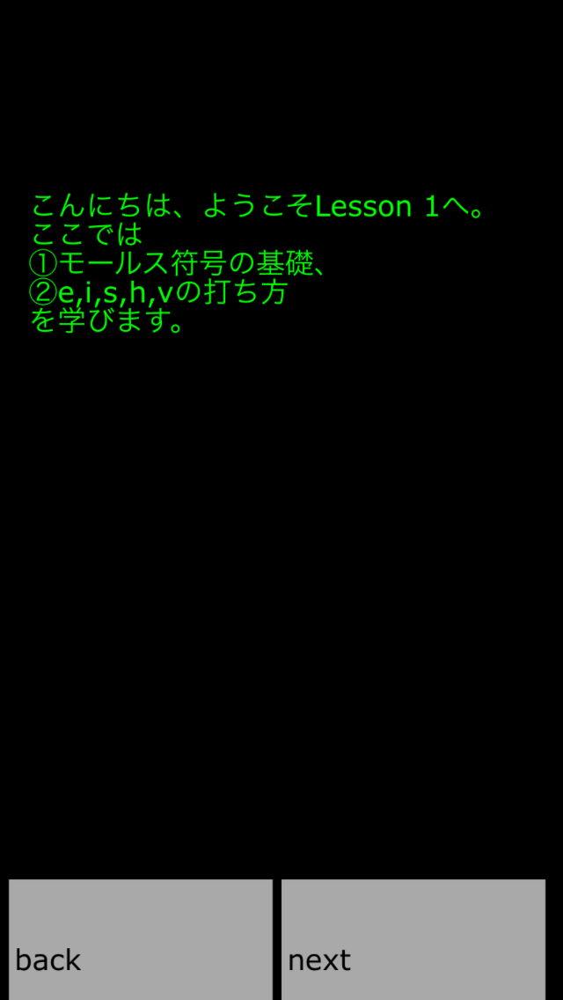
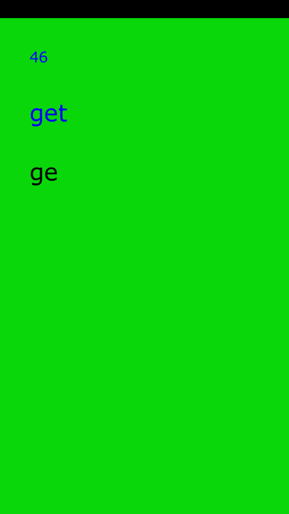
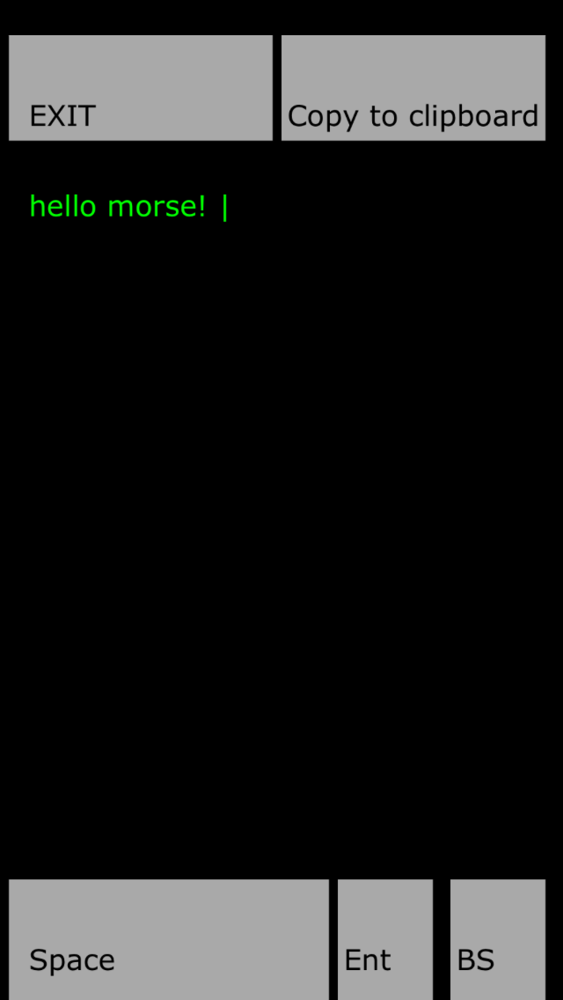

- はじめに
- 導入・操作方法
- 参考文献
皆様、ハッピー・エイプリルフール！
エイプリルフール中は証明のしようがありませんが、このページには嘘偽りはないつもりです。
で、その代わりに今年のエイプリルフールは「打倒google」を目指して楽しもうかと考えています。
まずはこちらをご覧頂きたい。
そう、googleはエイプリルフールに合わせて、「洗練された入力方式」を採用したアプリを公開するらしいのである。
モールス符号入力方式。確かに（スペースやバックスペースを除くと）「トン」と「ツー」の二つしかキーの要らない入力方式は、洗練されている。
だが、待ってほしい。本当に、二つもキーが必要なのであろうか？
本当に洗練された入力方式には、もはやキーボードなど不要なのではないだろうか？
そう思った私は、この度「本当に洗練された」入力方式を持つテキストエディタを試験的に作成してみた。
皆様には是非これから、この「本当に洗練された」入力方式を日常生活の中でご活用頂きたい。
尚、一応モールス符号を打った経験のない方も万が一いらっしゃる場合に備え、初心者向けのレッスンが付属している。
また「本当に洗練された」入力方式を持つタイピングゲームも付属しているので、そちらもご活用頂きたい。
目次にもどる
このプログラムは、javascriptで組まれています。
とりあえずPCやiphoneで動きます。
導入方法
コレをクリック、必要ならばダウンロードするだけです。
iphoneの場合はsafariで開いて、画面下部中央のから「ホーム画面に追加」を行うことで、あたかもアプリかのように動いてくれます。
PCで開く場合は、まぁ大概のブラウザなら普通に動いてくれるんじゃないでしょうか？
ただしjavascriptがブロックされている場合は、解除をお願い致します（例：internet explorerで「このwebページはスクリプトやactivexコントロールを実行しないように制限されています」とか出てきたら、「ブロックを解除」ボタンを押してあげて下さい）。
操作方法
操作方法は非常に簡単。基本的にクリックまたはタップのみで操作します(キーボードもつかえますけどね)。

タイトル画面にある通り、三つのモードが用意されています。それぞれクリック（タップ、以下同じ）して始めてください（尚キーボードからそれぞれもモードの頭文字「L」「G」「E」を入力してもOKです）。
「Lesson」モードの操作方法
Lessonモードでは、4回のレッスンでモールス符号の基礎が学べます。尚、ここでの語呂合わせ暗記方法は
参考文献2に従っています。

Lesson 1から順にどうぞ。レッスンを開始すると、下のような画面になります。

画面下灰色の「next」ボタンを押すことで、レッスンが進みます。「back」を押せば戻れます。
レッスン中、何回か実際に練習をする場面が現れます。その際には画面の黒いところを指示に従ってタップすることでモールス符号の練習をして下さい。
尚、一つの文字を表すモールス符号内では、「トン」及び「ツー」は0.3秒以内の間隔で打って頂く設定になっています。
また、「トン」は0.1秒程度のタップ、「ツー」は0.3秒程度のタップを想定してます。これは（厳密には）実際のモールス符号の規則とは異なりますが、スマフォなどからの入力の場合、これくらいがやりやすいかなー、という目安で設定しております。
尚、キーボードの操作の場合、「next」がEnterキーやスペースキー、及び右矢印ボタンに対応します。
「back」はBackspace 及び左矢印ボタンに対応します。
その他のキーが押された場合は、画面黒いところがクリックされたことに相当します。
「Game」モードの操作方法
タイピングゲームです。

ご覧のとおり、一切キーボードの無い、この上なく洗練された入力方式を持つタイピングゲームとなっております。
一分間の間になるたけたくさん、
青字で表示される単語をモールス打鍵して下さい。
緑色のところで（っていうか画面上どこでも）クリック及び長押しすることでモールス打鍵できます。
キーボードの場合は、どのキーでもいいのでトントンツーツーして下さい。
尚、（繰り返しになりますが）一つの文字を表すモールス符号内では、「トン」及び「ツー」は0.3秒以内の間隔で打って頂く設定になっています。
また、「トン」は0.1秒程度のタップ、「ツー」は0.3秒程度のタップを想定してます。これは（厳密には）実際のモールス符号の規則とは異なりますが、スマフォなどからの入力の場合、これくらいがやりやすいかなー、という目安で設定しております。
ゲーム終了後には, 一分間に何語打てたかと, 正答率が表示されます。
「Editor」モードの操作方法
テキストエディターです。

ご覧のとおり、「Space」「Enter」「BackSpace」のみの、この上なく洗練された入力方式を持つテキストエディターとなっております。
基本的には画面の黒い部分をクリックして（つまりモールス打鍵して）文字を打ちます。
画面下部灰色のボタンは、「Space」はスペース（空白）、「Ent」は改行「BS」は一文字消去です。
尚、キーボードでは、それぞれ「Space」「Enter」「BackSpace」がこれらの灰色のボタンに対応します。
書きあがった文章は、画面上部右側「Copy to clipboard」からダイアログボックス内のテキストとして出力可能です。ここからコピーして、随意のアプリにペーストしてください。キーボードでは「C」がこのボタンに対応します。
最後に、画面上部左側の灰色のボタンは、出口です。タイトル画面に戻ります。
この際、書いた文章は消えるのでご注意ください。キーボードでは「E」及び「ESC」が対応します。
尚、上記以外のキーボードのキーが押された場合は、画面の黒いところがクリックされたものとみなされます。従って、割と好きなキーを用いてトントンツーツーすることが可能です。
最後に、このプログラムで打ち込める記号はアルファベット26文字の他には0123456789.,?!-/@()で、これらは
wikipedia内「モールス符号」のページに従っています。
目次にもどる
- 「Gmail Tap」宣伝ムービー, 2014/3/31閲覧.
- http://www91.sakura.ne.jp/~kay2/ham/morse.htm, 2014/3/31閲覧.
- wikipedia内「モールス符号」のページ, 2014/3/31閲覧.
目次にもどる